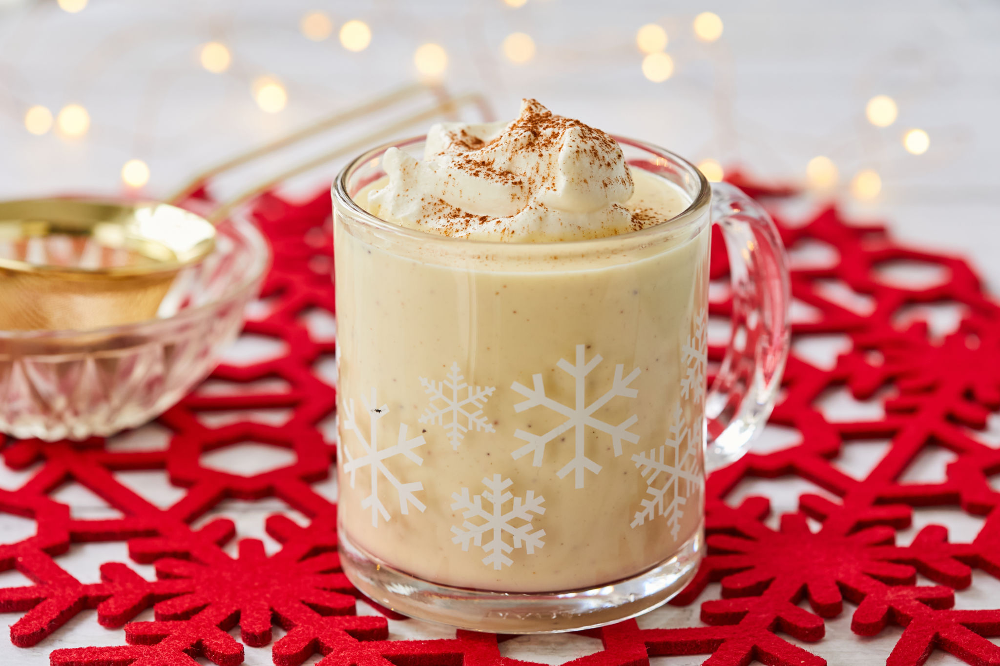

Eggnog

Description
Eggnog is a delicious winter treat, made to warm bones and raise spirits.
It is an egg-based drink, high in fat, and spiced with nutmeg and spirits (usually rum and/or whisky).
Ingredients
Yields 20 servings
- 12 egg yolks
- 12 egg whites
- 2+1 cups white sugar
- 750ml of rum (dark rum if possible)
- 950ml half-and-half cream
- 950ml heavy/fresh cream
- 1/4 teaspoon of FRESHLY ground nutmeg
Steps
- In a large bowl, combine egg yolks, 2 cups sugar and rum. Mix well, cover and refrigerate for 24 hours
- Stir half-and-half into cooled yolk mixture. In a large bowl, whip the heavy cream until soft peaks form; set aside.
- In a separate clean bowl, with a clean whisk, whip egg whites until thick, then gradually add sugar and whip until peaks form. Fold the whipped cream into the egg whites, then fold into the yolks mixture. Sprinkle top with nutmeg.